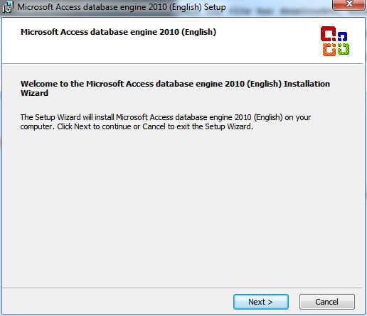
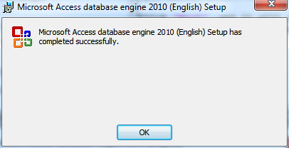

Installing the MS Access ODBC Driver
In order to use our Python program to import data, we need to install the Microsfot Access ODBC drivers from Microsoft. They can be found here, on the Microsoft Access Database Engine 2010 Redistributable download page.
When you click the download button, it will give you a choice between two files. Check the box next to the file ending in "_x64.exe", and then click the Download button.
Once the file has downloaded, double-click on it to run the installer. Windows will pop up a window asking if it is okay to install the software. Choose "Yes". You should see a screen like this:

Click "Next", and it will ask you to accept the license agreement. Go ahead and do that, and continue through the installer. The default choices will work fine. Once the install completes, you should see a screen like this:
